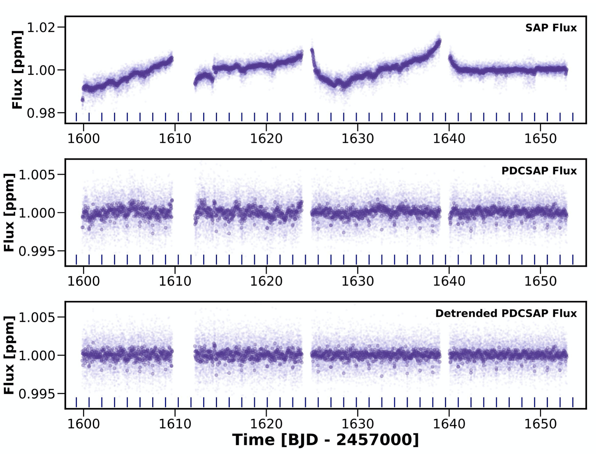
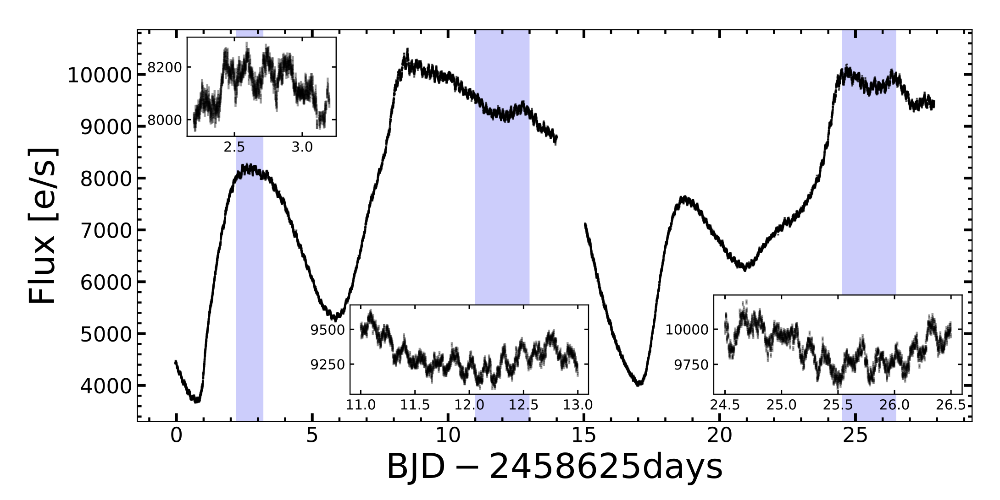
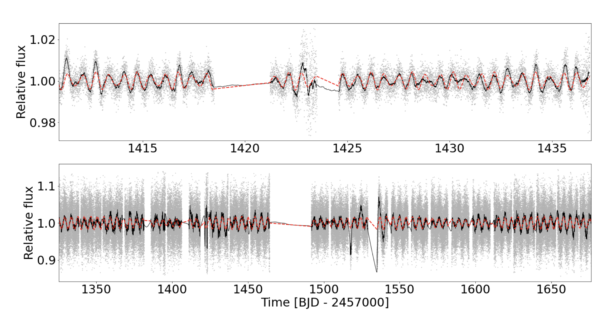

STATUS UPDATE: Sector 28 has ended and Sector 29 has started!.
Welcome TESS followers to our weekly news bulletin!
The TOI-763 system: sub-Neptunes orbiting a Sun-like star (Fridlund et. al., 2020) :
In this paper the authors report the discovery of a planetary system orbiting TOI-763, also known as CD-29 7945. This is a bright (V = 10.2), high proper motion G-type dwarf star. Using spectra the star was found to be slightly smaller than the Sun, a little older, and with a similar metallically. The system was observed in TESS sector 10 data and using the light curve two planet candidates were found to be transiting the star. TESS and HARPS high-precision radial velocity follow-up measurements were used to confirm the planets. The authors determine the mass, radii, and bulk densities for the two planets, they also discovered a third potential planet.
The inner most planet, TOI-763 b, has an orbital period of Pb = 5.6 days, a mass of Mb =9.8 M⊕, and a radius of Rb = 2.37 R⊕. TOI-763 c, has an orbital period of Pc = 12.3 days, Mc = 9.3 M⊕, and a radius of Rc = 2.87 R⊕. The third outermost planet candidate orbits the star with a period of 48 days. Although not yet confirmed as a planet, if it were it would have a minimum mass of Md = 9.5 M⊕. The paper goes on to discuss the importance and implications of the system in terms of the geometrical arrangements of planets orbiting G-type stars.
TOI-824 b: A New Planet on the Lower Edge of the Hot Neptune Desert ( Burt et. al., 2020) :
The authors present the detection of a hot Neptune exoplanet orbiting TOI-824 (SCR J1448-5735) using TESS data. TOI-824 is a close by (d = 64 pc) K4V star. The orbital period of the planet is given as 1.393 days and the radius as 2.93 R⊕. The planet was confirmed using radial velocity measurements from the Planet Finder Spectrograph and the High Accuracy Radial velocity Planet Searcher. Data from these instruments indicate the planets mass as 18.47 M⊕, with a density of 4.03 g cm-3 making it twice as dense as Neptune.
TOI-824 b is thought to have a high equilibrium temperature and thus likely to have a cloud free atmosphere. These facts make TOI-824 b a good candidate for follow-up atmospheric studies.
Bow-shocks, nova shells, disc winds and tilted discs: The Nova-Like V341 Ara Has It All (Castro Segura et. al., 2020Balona 2020) :
V341 Ara is one of the closest (d ~150pc), and brightest (V~10) nova-like cataclysmic variables known to date. A bright emission nebula surrounds this binary system and is likely a remnant of recent nova eruptions. In this nebula there is a bow-shock, which is thought to be caused by the accretion wind running into the nova shell. This paper presents the first multi-wavelength study of V341 Ara and utilizes high-cadenced photometry from TESS.
Quasi-periodic, super-orbital variations with a time-scale of 10-16 days are detected at an amplitude of roughly one mag. The photometry from TESS revealed for the first time both the orbital and “negative superhump” periods. This “negative superhump” tends to point to a tilted accretion disc.
Spectroscopic data indicated anti-phased absorption and emission line components, the radial velocities of which suggested a high mass ratio. This high mass ratio implies an unusually low white dwarf mass. The wind mass-loss rate of the system was also obtained from the spatially resolved [Oiii] emission produced in the bow-shock, and used to test and calibrate accretion disc wind models.
There is evidence which points to an association between V341 Ara and a “guest star” mentioned in Chinese historical records in AD124. If this association is accurate then this would mark the date of the nova eruption, making V341 Ara the oldest recovered nova of its class.
Alone but not lonely: Observational evidence that binary interaction is always required to form hot subdwarf stars (Pelisoli et. al., 2020) :
In this paper the authors use data from TESS to investigate hot subdwarfs. Hot subdwarfs are core-helium burning stars that are believed to form when a red giant star undergoes extreme mass loss. This extreme mass loss is thought to occur due to binary interaction, but the high fraction of apparently single hot subdwarfs has cast doubt on this assumption and necessitated the need for further formation models. Such models would also have to account for hot subdwarfs in wide binary systems, which experience no interaction.
Using TESS data the authors probe for the existence of such non interacting binary hot subdwarfs. TESS light curves were analyzed for all known hot subdwarfs with a main sequence wide binary companion. The authors also search for common proper motion pairs to spectroscopically confirmed hot subdwarfs.
Results indicated that companions in composite hot subdwarfs show short rotation periods when compared to field main sequence stars. They display a triangular-shaped distribution with a peak around 2.5 days, similar to what is observed for young open clusters. This observed distribution of rotation rates for the companions in known wide hot subdwarf binaries provides evidence of previous interaction causing spin-up.
A shortage of hot subdwarfs are found with candidate common proper motion companions, considering the frequency of such systems among progenitors. The authors identify only 16 candidates after probing 2938 hot subdwarfs with good astrometry. Out of those, at least six seem to be hierarchical triple systems, in which the hot subdwarf is part of an inner binary.
The results of the investigation suggest that binary interaction is always required for the formation of hot subdwarfs.

Fig 1: Taken from Burt et. al., (2020). Top panel is the TESS TOI-824 SAP flux, middle is the PDCSAP flux, and the bottom is the PDCSAP flux de-terended. The light purple points are the 2 min data and the darker are the same data binned over 30 min cadence. The dark blue lines are the locations of the transit events identified in the TESS data validation report.

Fig 2: Taken from Castro Segura et. al., (2020). TESS light curve of V341 Ara from sector 21. The high-cadence light curve shows the complexity of the super-orbital modulation. The inserts are zoomins of the hi lighted regions. The orbital and superhump modulations are superimposed to the main signal with an amplitude roughly 3% of the dominant one can be appreciated. The ∼ 1 day data gap is due the perigee passage of the spacecraft while downloading the data. Taken from Balona (2020). Examples of A star flares in the TESS data. The maximum of the flare intensity is taken as the zero-point in time. Time is given in hrs and intensity in parts per thousand.

Fig. 3: Taken from Pelisoli et. al., (2020). TESS data for TIC 12528447 (top) and TIC 382518318 (bottom), two systems for which the variability has been attributed to rotation of the main sequence companion. TIC 12528447 was observed in only one sector, TIC 382518318 was in the continuous viewing zone and has 2 min cadence data for 12 sectors. The grey dots are the TESS data, the black line is a running mean every 50 points, and the dashed red line is the multi-component fit.